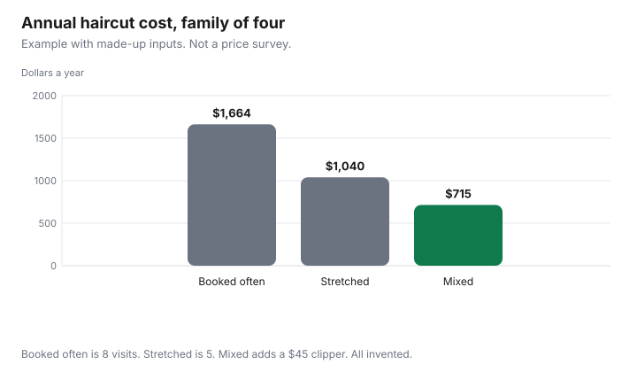

Personal Care · Canada
Haircut Costs in Canada: How to Stretch Visits and Pay Less Without a Bad Cut

Your yearly haircut cost in Canada is visits per year × menu price × (1 + tip), per person. In a made-up example, four people paid between $715 and $1,664 a year depending on the strategy. A haircut bill is the visit price plus the tip, times the number of people, times the visits in a year. Households feel it because the line repeats, not because a national average has been published. The dollars below are an example with made-up inputs. Plug in the menu at the shop you use. This is not advice to change your hair, and it is not a ranking of salons. An offer type is disclosed.
Key takeaways
- Annual cost is visits per year times the price on the menu times one plus the tip you leave. Do it per person, then add the household.
- No Canadian average price is used. The three strategies are an example with made-up inputs: $1,664, $1,040, and $715 for four people.
- Stretching the gap only saves money if you still want the hair at the longer interval. A bad cut that you redo is two visits.
- The example uses a made-up $7 on a $45 cut so the tip is inside the year.
- A clipper pays back only the salon visits it replaces. Price-tracking for a tool is the Amazon.ca guide, not a product pick.
What drives haircut prices at chains, independent salons and barbers
The price on the board moves with the service, the time in the chair, the rent of the shop, and the experience the shop is selling. A chain and an independent can both post a low cut and a high colour.
A barber and a salon are not the same service just because both use scissors. Write the name of the service, not the name of the banner. A short cut, a restyle, a beard trim, and a blow-dry are four lines. Comparing a restyle at one shop with a fringe trim at another is not a price check.
Add-ons are part of the driver. A shop that quotes a cut and then adds a treatment you did not ask for has changed the service. Ask what is included before you sit down, and ask what a child or a senior cut includes if you are booking one. This guide does not cite a chain’s menu, so it does not quote one. Your number is the number on the menu in your city, plus the tip in the next section. Put the annual total on a zero-based budget as its own line, next to the other repeats, rather than inside a vague personal pot.
Stretching time between cuts: styles and maintenance
The saving in a longer gap is the visit you do not book. It is not a cheaper haircut.
If you like the shape for eight weeks and you have been booking every six, the extra two weeks are the whole discount. If you book a fix because the shape collapsed, you have added a visit and lost the plan. Choose the style for the length you will actually wear, including the weeks after the fresh cut.
Maintenance between full cuts is a smaller appointment or a home step: a fringe that falls into the eyes, a neck that bothers you, a beard line. Those are not free if you pay someone, and they are not a full cut if you do them in ten minutes at home. Count them as their own rows. In the example with made-up inputs, moving four people from eight full visits to five full visits is the difference between $1,664 and $1,040. That arithmetic uses a made-up $52 a visit. It is not a claim about how often anyone should cut their hair.
Chains vs independents vs home clippers
A chain wins on a given day when its posted price for the service you want, plus tip, is lower than the independent you would otherwise book, and you like the result enough not to redo it. An independent wins on the same test in the other direction. Neither win is national. Home clippers win only on the visits they replace, after you add the price of the tool and subtract the visits you still pay for because the home cut is not the one you want for a photo or an interview.
The example mixed strategy is two adults staying on five full visits and two children moving to three shorter paid trims, plus one clipper. The dollars are in the table. A clipper you might buy is a price you can watch over time. The Amazon.ca price guide is that habit. It is not a recommendation of a model, and this page does not name one. If nobody in the house will use the tool, do not buy it to make the chart look thrifty.
Tipping norms and how they change the real price
The real price is the amount that leaves your account, including the tip. Some terminals print a suggested percent.
That suggestion is the shop’s prompt. It becomes your tip only if you leave it. A cash tip and a card tip are the same dollars in the annual column.
In the example with made-up inputs, the service is $45 and the tip is $7, so one visit is $52. Eight visits are $416 for one person. Skip the tip in the multiplication and you will understate the year by $56 for that person, which is $224 for four people. If your shop posts that tips are not accepted, the tip cell is zero and the menu price is the visit. Student clinics, which sometimes post that, are on the clinic guide.
Kids' and seniors' cuts and discount days
A posted child price or senior price is a different row, not a rumour about a discount day. Ask whether the price is for a shorter service, and whether it applies on every day or on a named weekday.
This guide does not cite a chain’s discount calendar, so it does not name a day or a banner. Write the day on your own sheet if the shop prints one. A household with several children feels the visit count more than the single adult menu. The family grocery guide is the other repeating bill. Hair is the same kind of line: a count of people times a count of events.
The example treats two children at a made-up $25 with no tip, three times a year, as $150. That $25 is not a published kids’ cut. If your shop’s child price is a full cut at the adult rate, use the adult rate. A senior discount you qualify for and do not ask about is a discount you did not get. One you do not qualify for is not a plan.
Annual cost comparison table
Do the multiplication per person, then add. Visits per year times price plus tip.
The three strategies below are one household of four. They are an example with made-up inputs. The second table is the trade-off, not a second set of prices. A cap on repeating household costs is the subscription cap guide. A haircut is not a subscription, and it still belongs in the same conversation about what repeats.
| Strategy | Who | Visits | Price + tip | Year |
|---|---|---|---|---|
| Booked often | 4 people | 8 each | $45 + $7 = $52 | $1,664 |
| Stretched | 4 people | 5 each | $52 | $1,040 |
| Mixed | 2 adults, 5 visits | 5 | $52 | $520 |
| Mixed, continued | 2 children, 3 short visits, plus one clipper | 3 each | $25 + $0, and $45 once | $150 + $45 = $195 |
| Mixed total | The two rows above | $715 | ||
| Your household |
| Move | What it changes | Trade-off |
|---|---|---|
| A shape that grows out cleanly | Fewer full visits | You have to like the hair in the later weeks |
| Fringe or neck trim only | A short visit instead of a full cut | You still pay if someone else does it |
| Home clippers for one or two people | Replaces some paid visits | The tool is wasted if it is not used, and a redo is a second visit |
| A posted child, senior, or weekday price | The menu line, if you qualify | Only the price the shop prints, on the days it prints |

Sources
- The visit prices, the tip, the clipper, and the visit counts are examples with made-up inputs.
- A suggested percent on a terminal was not copied from a shop.
Frequently asked questions
How much does a haircut cost in Canada?
The annual table is an example with made-up inputs: a $45 cut plus a $7 tip, eight times a year, is $416 for one person and $1,664 for four. Ask the shop for the posted price, add the tip you actually leave, and multiply by the visits you will book.
How can I make my haircut last longer?
Choose a shape that still looks finished when it grows, and do the small maintenance at home between full cuts. A fringe trim or a neck clean-up is not the same appointment as a full restyle. In the example, dropping from eight visits to five is the whole saving, and it only works if you still like the hair in week eight.
Are chain salons cheaper than independents?
Not as a national fact. A chain can post one price and an independent can post another, and either one can be higher once the tip and the add-on are on the bill. Write down the service, the price on the menu, and the tip. Compare those two totals for the haircut you actually want, not for a different service with a lower headline.
How much should I tip for a haircut?
Some shops print a suggested percent on the terminal, and that suggestion is not a rule. The example uses a made-up $7 on a $45 cut so the annual total includes it. Use the amount you leave, including a zero if the shop says tips are not accepted.
Is it worth buying clippers to cut hair at home?
Only against the salon visits the clippers replace, and only if someone in the house will use them. In the example with made-up inputs, a $45 clipper plus two children at three short visits of $25 is part of a $715 household year, against $1,664 if everyone stays on eight full visits. A clipper that sits in a drawer is a cost, not a strategy.
Researched and drafted with AI assistance and fact-checked against official Canadian sources. How we create content.
Disclosure: Amazon.ca storefronts are an offer type, for a clipper or a pair of shears if you later add one to a shopping list. Saving Optimizer may earn a commission if a partner link is added later. No partnership is claimed with Amazon or any salon. Education only. This page does not name a best clipper, chain, or barber.